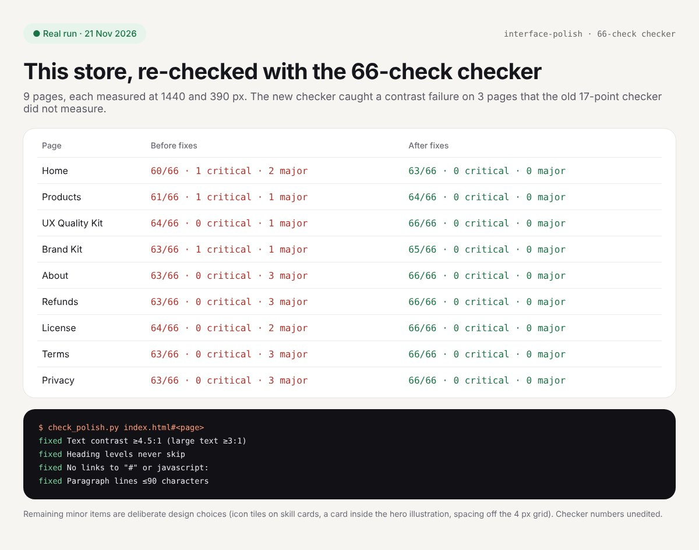

For product designers and PMs who use Claude
Claude does the first pass. Second Pass checks it.
40 skills and 38 checker scripts that make Claude work like a meticulous senior design partner. It measures contrast, keyboard focus, design tokens, WCAG criteria and test statistics in a real browser or with real maths, then fixes what it found.
Or try 2 skills free. One payment, lifetime updates. Works in Claude.ai (Pro, Max, Team, Enterprise), Claude Code, Cursor and Codex. Team licences from $149.
Real run, numbers unedited
From 38 to 66 of 66 checks, on the same content
A typical AI-made pricing page. The checker opened it at 1440 and 390 px wide, found 7 critical problems (contrast, fake buttons, blocked zoom, overflow), and the skill fixed exactly those.



Tested on Claude.ai on 21 November 2026 with plain requests, as a customer would type them. Where a skill did not switch on by itself the first time, we rewrote it and tested again.
From people using it
What designers and PMs say
Who makes this
Built by a working design lead, for the review we never had time to do
Second Pass is made by a product design lead who runs UX for AI products and reviews AI-made screens every week. The same problems kept coming back: text you can't read, buttons that aren't buttons, pages that break on a phone, research numbers with no range. Each skill turns one of those reviews into a check Claude runs itself, and every check was tested on real work before it shipped.
Questions go straight to the maker: support@uiuxpass.com.
Why it's different
Most skill packs tell Claude what good looks like. These check it.
Measured, not judged
Contrast, focus, overflow, layout shift, token drift and pixel differences are measured in a real browser at desktop and mobile widths. Claude reports the number and where it is.
Honest numbers
Usability results, surveys and A/B tests come with 95% ranges, sample-size warnings and peeking checks. No "significant!" without the interval.
Built to be used
Every answer opens with the result, gives decisions as a pros/cons table and ends with a self-check, so you can forward it to your team as it is.
What's inside
40 skills in five kits
Claude picks the right skill from what you ask. Skills marked checker come with a script that measures the result.
Design Quality Kit
Catch what makes a product look unfinished or shut people out, before it ships.
interface-polishchecker66 browser checks on any HTML page (motion, accessibility, typography, layout, the generic AI look) and a fix mode.
accessibility-auditcheckerAll 55 WCAG 2.2 A and AA criteria marked pass, fail, partly checked or manual, with code fixes. Never a false conformance claim.
design-system-checkcheckerEvery colour, font, spacing value and radius measured against your tokens: percent on-token and each value to change.
design-file-reviewcheckerReview Figma frames and screenshots before code: measured contrast and target sizes, missing states, ranked fixes.
design-qacheckerPixel diff between the build and the design export, with a drag-to-compare page and developer tickets.
heuristic-ux-copy-reviewNielsen's 10 heuristics and UX copy for a screen or a whole flow, with measured contrast and sources.
motion-designcheckerMotion tokens, component patterns and a reduced-motion plan, plus an inventory of what a page really animates.
mobile-platform-guidelinesnewchecker12 checks on real iPhone and Android viewports: 44 pt / 48 dp targets, input zoom, safe areas, bottom nav, 200% text, thumb zone.
localizationnewcheckerFinds missing translations, broken placeholders, strings too long for their button and missing plurals; pseudo-localizes to stress-test layouts.
ux-writingcheckerButtons, errors, empty states and confirmations that say what happens, with a linter for every string.
Research & Product Kit
Decide with evidence: research, tests, numbers and specs a team can act on.
usability-testcheckerPlan, script and analyse tests with real users: success rates with confidence ranges, SUS grade, issue priority.
user-interview-synthesischeckerUp to five needs with counts and verbatim quotes, and a checker that proves every quote is in your data.
survey-researchcheckerNeutral surveys and results with 95% ranges, NPS with its interval, margin of error and segment warnings.
journey-mapcheckerJourney maps and service blueprints from evidence, rendered as one accessible page that flags gaps.
product-discoverycheckerJobs to be done, opportunity trees, riskiest assumptions and RICE scores with a test of how stable the ranking is.
experiment-analysischeckerA/B test sample sizes before, and lift with confidence intervals, sample-ratio and peeking checks after.
competitive-ux-benchmarkcheckerSame tasks tested in every competitor, scored with evidence, and your biggest gaps in fix order.
product-speccheckerSpecs and handoffs engineers can build from: metrics with baselines, Given/When/Then criteria, every state.
information-architecturenewcheckerCard sorts and tree tests analysed properly (similarity, suggested groups, success with 95% ranges, first clicks), then a sitemap in your users' words.
user-flows-wireframesnewcheckerEvery path designed before polish: a checker for dead ends and missing empty, loading and error states, plus a grey-box wireframe per screen.
onboarding-activationnewcheckerNames the activation moment, audits the path to first value in 8 checks and redesigns it so new users get there faster.
product-analytics-funnelnewcheckerFunnels with 95% ranges and time between steps, cohort retention and a tracking-plan linter; the worst step becomes a design question.
ai-feature-designDesign AI features for when the model is wrong: every moment specified, controls matched to the stakes.
ai-assistant-ux-auditHands-on audit of an AI assistant: repeat runs, blind re-scoring, a 10-moment experience map and a scorecard.
Brand & Presentation Kit
Learn your brand once, then make decks, brochures, reports and social images that stay on it.
brand-kitcheckerYour brand as tokens and a contrast-checked preview, read from your guidelines, a website or just a screenshot, or a new brand from five questions.
ui-style-librarychecker36 palettes, 30 font pairings and 20 style recipes, all passing AA in light and dark. Three directions side by side.
presentation-deckcheckerDecks as one HTML file: scroll or present, presenter view, edit in place, PDF and PowerPoint export.
print-brochurecheckerA4 or A5 folded brochures with a print PDF, 3 mm bleed and crop marks.
web-reportcheckerReports as a web page: conclusion first, sourced numbers, method and confidence note.
social-graphicscheckerOn-brand posts, carousels and banners exported as exact-size PNGs with a legibility check.
product-videonewcheckerLaunch videos and GIFs written in HTML and rendered to MP4: checked for readable text, safe area, message in 2 seconds and captions.
design-case-studyPortfolio case studies in a Before–During–After story, every decision with its reason.
Design System & Figma Kit
From one colour to a complete, accessible system, in code and in Figma.
design-system-starternewcheckerTokens, light and dark themes, Tailwind preset, Figma variables, DESIGN.md and every component in every state, with all colour pairs passing WCAG AA. Three ready systems included.
figma-buildnewWrites results into Figma: your tokens as real variables with light and dark modes, prototypes as frames, review findings next to the frames they belong to.
Core
The way of working that ties every skill together.
get-startednewThe first thing to try: a two-minute demo that measures a real page, fixes it and measures again (39 → 66 of 66 in our run), or picks the right skill for what you have.
second-pass-workflowGoal, success criteria, what the best do, fixed constraints, result: every task, every time.
self-reviewcheckerFive questions and a best-in-class comparison before anything is delivered.
prototype-five-directionsFive genuinely different working prototypes from one brief, the best two recommended.
product-writingPosts, proposals and updates with one core message and a first step readers can take today.
open-imagesnewcheckerReal, openly licensed photos (CC0, public domain, CC BY) with ready credits, and a check that every image on the page is credited the way its licence asks.
See real outputs
Open what the skills produce
These are files the skills made, not mock-ups. See the full library with requests to copy.
Check your own page, free
16 measured checks in your browser · nothing uploaded
A deck you can present
presentation-deck · press P to present
Usability test results
usability-test · confidence ranges and SUS
A research readout page
web-report · conclusion first
A journey map
journey-map · emotion curve and evidence row
A UX benchmark
competitive-ux-benchmark · weighted scorecard
Design QA, build vs design
design-qa · drag to compare, differences in red
A design system, light and dark
design-system-starter · every component, contrast table
A user flow with wireframes
user-flows-wireframes · flow diagram and states
A 12-second launch video
product-video · rendered from HTML
Honest comparison
Second Pass and the free options
Good free design skills exist and you should try them. Here is where Second Pass is different, and where it is not.
| Claude on its own | Popular free design skills | Second Pass | |
|---|---|---|---|
| Design guidance and style ideas | Yes | Yes, often large libraries | Yes, 36 palettes, 30 font pairings, 20 styles |
| Measures pages in a real browser | No | Some, usually a few checks | 66 checks, WCAG 2.2 mapping, token and pixel checks |
| Research and test statistics | Estimates in prose | Rarely | Confidence ranges, SUS, NPS, A/B tests, RICE stability |
| Specs, journeys, benchmarks for PMs | Ad hoc | Rarely | Templates plus checkers |
| Design system and Figma | Ad hoc values | Some generate systems | Contrast-proven tokens, light and dark, written into Figma as variables |
| Works in Cursor and Codex | — | Usually | Yes, same skills |
| Price | Included in your plan | Free | $49 once, lifetime updates |
| Where it falls short | Second Pass is new: no public reviews yet, and Claude.ai's built-in Slides and Design tools take over deck and design requests unless you name the skill. We say this up front. | ||
Pricing
Pay once. Everything, forever.
No subscription. Every skill that exists today and every one we add later.
Second Pass, lifetime
$49 one person, one payment
- 1 person
- $49
- Team, up to 5
- $149
- Team, up to 20
- $299
- All 40 skills and 38 checker scripts
- Design System Kit: three ready, accessible design systems
- One-file install for Claude.ai, plus Claude Code, Cursor and Codex
- Every future skill and update, free
- Fairer prices in many countries, applied at checkout
Secure checkout by Gumroad. Pick 1 person or a team licence at checkout. All sales are final, so try the free skills first.
Try it free first
Two full skills, no email tricks: heuristic-ux-copy-review and self-review.
Questions
FAQ
What do I need?
A paid Claude plan (Pro, Max, Team or Enterprise) with code execution, or Claude Code. You upload one file in Claude.ai under Plugins → Add → Upload plugin; it takes about five minutes. The checkers run inside Claude's own environment, so you install nothing.
Does it work with Figma?
Yes, both ways. Export a frame as PNG and design-file-review measures it. With Figma connected to Claude, it reads frames and variables, and figma-build writes back: your tokens as Figma variables with light and dark modes, prototypes as frames, review notes next to the frames.
Does it work in Cursor or Codex?
Yes. The skills follow the open Agent Skills standard. Run npx skills add ./skills from the download and pick your agents, or copy the folders into ~/.codex/skills or .cursor/skills.
Will Claude use the skills automatically?
Mostly yes: each skill switches on from plain requests ("is this page accessible?", "analyse this A/B test"). For decks, designs and social images, Claude.ai may open its own built-in tools instead; naming the skill ("use presentation-deck…") fixes it. The guide explains this.
I already use Claude Design. Do I need this?
They do different jobs. Claude Design makes the first version of a screen, deck or page. Second Pass checks what was made, any way it was made: it measures contrast, tap targets, keyboard focus and layout in a real browser, fixes what fails and shows the score before and after. Many people use both: Claude Design to build, Second Pass before it ships.
Is this made by Anthropic?
No. Second Pass is an independent product by UI/UX Pass. It is not affiliated with or endorsed by Anthropic. Claude is a trademark of Anthropic.
Can my whole team use it?
Yes, with a team licence: up to 5 people for $149 or up to 20 people for $299, chosen at checkout. The $49 licence is for one person. Please don't resell it or share it publicly.
Can I get a refund?
No. Second Pass is an instant digital download, so all sales are final. Try the two free skills first to see how it works. If something doesn't work as described, email support@uiuxpass.com and we will fix it.
What languages does it work in?
The skills are written in English; Claude answers in whatever language you write in.